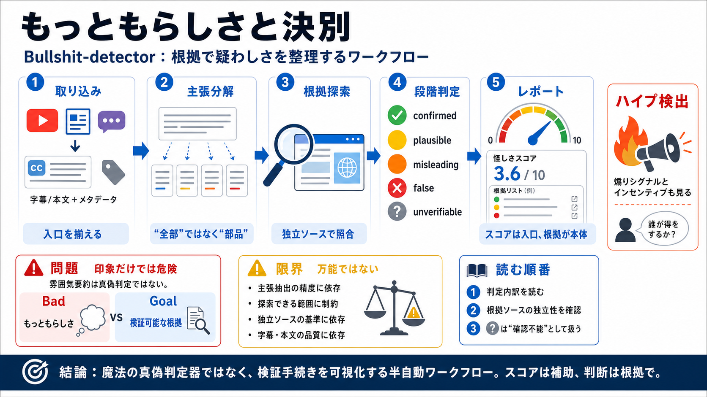

Bullshit Detector — AI Tools Catalog
Title: Bullshit Detector — AI Tools Catalog # Bullshit Detector. In the digital age, where artificial intelligence (AI) …

Title: Bullshit Detector — AI Tools Catalog # Bullshit Detector. In the digital age, where artificial intelligence (AI) …
Title: Bullshit Detector for AI Content: Fact-Check AI Content with Accuracy | tyy.AI Tools # Bullshit Detector for AI g…
Title: Bullshit Detector for AI generated content Introduction Home Bullshit Detector for AI generated content Bullshit …
Title: Bullshit Detector for AI generated content 2. Bullshit Detector for AI generated content. # Bullshit Detector for…
Title: Bullshit Detector for AI generated content Features - tyy.AI Tools Home Bullshit Detector for AI generated conten…